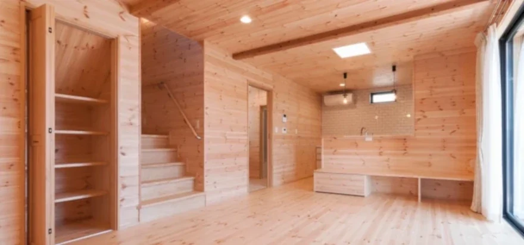

イベント情報
（終了しました）富山で始める「ちょうどいい平屋」2LDK｜40代からの家造り
詳しいご案内
日程・価格・募集内容などは、掲載当時の情報です。
富山の暮らしやすさに惹かれて、ここに住もうと決めました．．．
決め手は、将来を見据えた「長期優良住宅」で「資産価値の下がりにくい平屋」
開催日時：4月19日（土）～4月27日（日）
開催場所：富山市羽根

Kさん（40代、県外出身）は、富山の豊かな自然と落ち着いた暮らしに魅力を感じ、
生活の拠点を移すことを決意しました。
「仕事も生活も安定してきた今、自分にとって本当に価値のある住まいを持ちたい」
----そう考え、家づくりをスタート。
最初にフジ創Ainosを訪れたきっかけは、「コストと性能のバランスが良い」と聞いたこと。
実はその時点では、漆喰や無垢材をふんだんに使った"天然素材の家"だとは知らなかったそうです。
家づくり無料相談の
一コマ
Kさん：「家づくりには興味がありますが、将来、故郷に戻る可能性もあるんです」
フジ創Tさん：「フジ創の家は、将来売却を考えても資産価値が下がりにくいんですよ」
Kさん：「資産価値が下がりにくい家って、具体的にはどういうことですか？」
- ・納得できた、素材へのこだわり
- ・初めての打ち合わせで訪れたのは、やさしい木の香りが漂うモデルハウス。
- ・漆喰の壁、無垢材の床----自然素材が生み出す空気感に、ただならぬ"本物感"
「平屋・ガレージ付き・木の家など多彩な実例をご紹介中」
▶施工事例をもっと見る
見た目の派手さや流行に左右されず、長く愛されるシンプルなデザインと、良質な素材・高性能な構造。
それらが資産価値を支える理由だと、納得していただきました。
平屋という選択。
シンプルで、機能的で、将来も安心
選ばれたのは、すべてがワンフロアで完結する"平屋住宅"。
将来の暮らしやすさはもちろん、地震への強さやメンテナンスのしやすさも決め手に。
1.耐震等級3（最高等級）
地震への備えは、長く安心して住むための第一条件。
フジ創では、耐震性能徹を底的に強化します。
現行の耐震基準に適合するだけでなく、必要に応じて
さらに強化することも可能です。特に日本は地震が多い地域ですから、耐震性を高めることは家を守るためには欠かせません。
地震に強い設計と、耐震装置を標準装備しています。フジ創では、家族の命を守るため、安心して暮らせる家づくりを行っています。
2.断熱等級6
―――トリプルガラス仕様
富山の冬にも安心。光熱費を抑えながら、快適な室内環境をキープ。
天然木由来の熱を貯める効果も相まってより暖かい家
3.長期優良住宅 認定仕様
資産価値の裏づけとして、将来の売却や相続にも強い家づくり。
漆喰壁や天然木材が生む高級感と、時とともに深まる味わい。